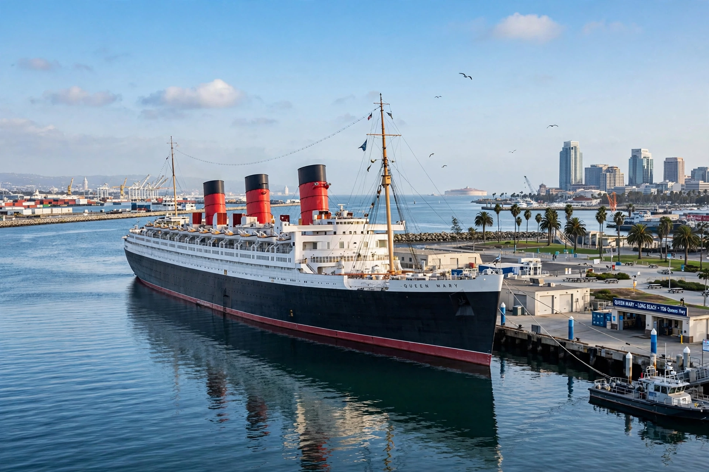

RMS Queen Mary
From Wikipedia, the free encyclopedia

Queen Mary at Long Beach.RMS Queen Mary is a retired British ocean liner that sailed the North Atlantic for Cunard from 1936 to 1967. Named for Mary of Teck, she and her running mate Queen Elizabeth carried the wealthy and famous in art-deco luxury, then carried over a million troops as the \'Grey Ghost\' in the Second World War. Since 1967 she has been moored at Long Beach, California, as a hotel and museum ship.
Construction and service
Built by John Brown & Company at Clydebank (hull 534) after a Depression-era pause rescued by government loan conditioned on the Cunard–White Star merger, Queen Mary launched in 1934 and took the Blue Riband from Normandie. Her 1936 maiden voyage began 31 years of crossings interrupted only by war.
War service
Painted grey and converted to carry up to about 15,000 troops per voyage — the most ever embarked on one ship — her speed let her outrun U-boats, and Hitler reportedly offered a bounty for sinking her. In 1942 she accidentally rammed and sank her escort, the cruiser HMS Curacoa, with heavy loss of life, an event long kept secret.
Long Beach
Jet competition ended her career in 1967; her final voyage delivered her to Long Beach, where she opened as a hotel/museum in 1971. Decades of mixed management and deferred maintenance followed; after a 2021 critical-repairs programme under city control, she reopened to tours in 2023.